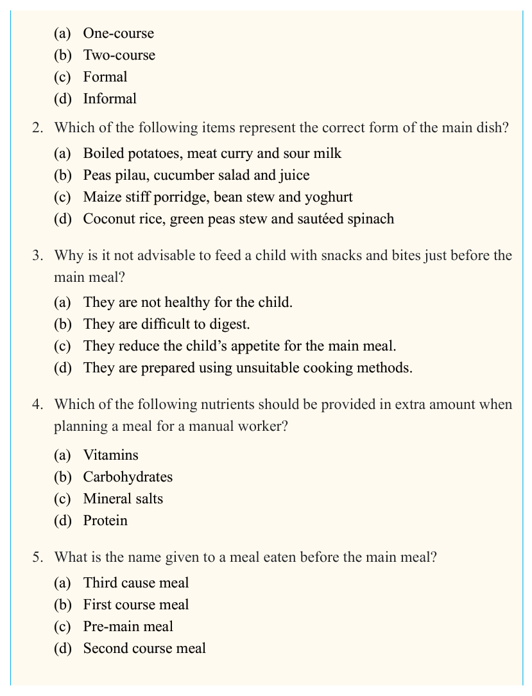

114


Food and Human Nutrition

Form Two

(a) One-course
(b) Two-course
(c) Formal
(d) Informal
2. Which of the following items represent the correct form of the main dish?
(a) Boiled potatoes, meat curry and sour milk
(b) Peas pilau, cucumber salad and juice
(c) Maize stiff porridge, bean stew and yoghurt
(d) Coconut rice, green peas stew and sautéed spinach
3. Why is it not advisable to feed a child with snacks and bites just before the main meal?
(a) They are not healthy for the child.
(b) They are difficult to digest.
(c) They reduce the child’s appetite for the main meal.
(d) They are prepared using unsuitable cooking methods.
4. Which of the following nutrients should be provided in extra amount when planning a meal for a manual worker?
(a) Vitamins
(b) Carbohydrates
(c) Mineral salts
(d) Protein
5. What is the name given to a meal eaten before the main meal?
(a) Third cause meal
(b) First course meal
(c) Pre-main meal
(d) Second course meal
17/09/2025 16:30